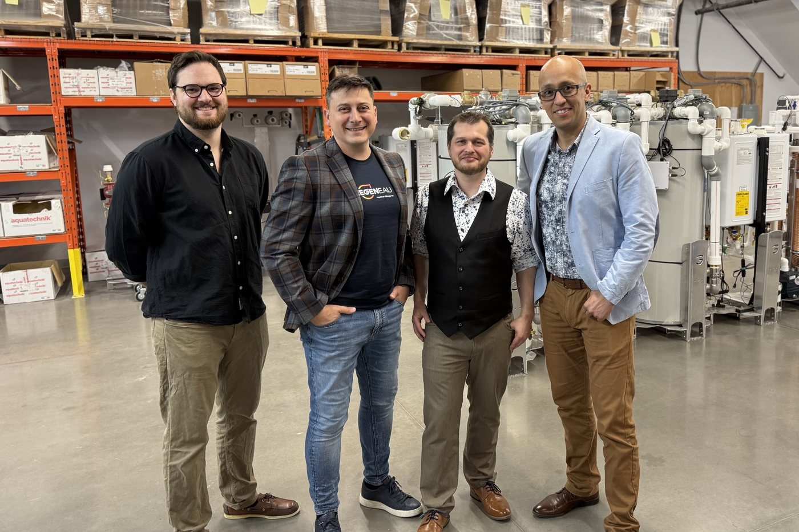

01
Strategic positioning
- Analysis and tracking of local and international markets
- Competitive intelligence and positioning
Decision-support systems for CEOs
I build custom decision-support tools for CEOs and organizational leaders: a clear, simple view of the whole, data that stays with you, and a decision that remains yours.
The problem
Business environments overwhelm leaders. Information overload breeds cognitive overload and bias, artificial intelligence keeps speeding up decisions, and the big picture gets harder and harder to hold.
The offer
I build decision-support tools for CEOs and organizational leaders, in three areas.
01
02
03
In the form of
Every tool is designed for your organization. Contact me to build yours.
The method
E2Y (said “E-two-Y”) supports the CEO's decisions continuously. It applies the scientific method to business: hypotheses, evidence and deliberate tests to navigate uncertainty.
Ground rules

About
Alejandro (Alex) Gaviria has spent more than 15 years at the intersection of innovation, business intelligence and executive decision-making. As CEO of RegenEAU, a Quebec cleantech manufacturer, he closed a pre-seed round of over $3M, led the company's first acquisition in France and ran a team of 12 to 14.
As cofounder and CEO of Kognitions, he supported more than 120 companies in de-risking and commercializing innovation; 20 of them raised over $280M in venture capital. A chemical engineer by training, he now builds E2Y, a CEO-centered decision system that runs locally and keeps leaders in charge. He works in French, English and Spanish.
Manifesto
I have led a manufacturing SME, raised funds, led an acquisition abroad and supported more than 120 companies. Everywhere, I have seen the same thing: leaders don't lack information. They lack clarity.
When everything accelerates, deciding faster is no longer enough. What sets an organization apart is the quality of its decisions and the rigour of their execution.
Intuition matters, and it deserves to be validated. A good decision rests on a clear system that shows what matters, one the leader understands, owns and trusts.
Hypotheses, evidence, deliberate tests. Every result teaches us something, and the next decision is better.
Confidentiality first. Your data stays with you, as much as possible.
I design the system; you decide. Turnkey tools, no in-house IT team, no needless dependency, built to last.
People, the environment and the local economy are part of the equation.
That is what I build with E2Y: decision systems for excellent execution.
Guide Ambition.
Validate Intuition.
Resolve Indecision.
Act.
Contact
Tell me about the decision or the tracking on your mind; I'll suggest the right tool.